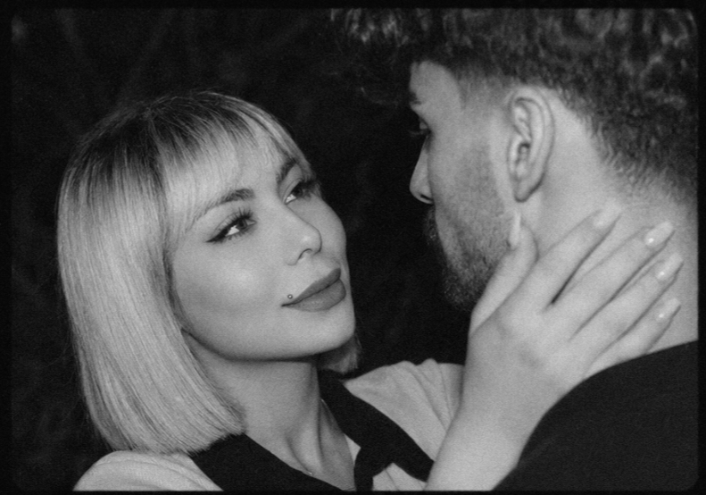

این فقط یک سایت نیست...
این چند تکه از قلب منه
که برات نوشتم. 🤍

نمیدونم این پیام رو از کجا شروع کنم... فقط میدونم امروز، روز تولد توئه و دلم نمیخواست مثل بقیه فقط بنویسم «تولدت مبارک». چون تو برای من، فقط یه تبریک ساده نیستی... جوجه... ۳۰ سال پیش، یه دختر به دنیا اومد که خودش خبر نداشت یه روزی قراره اینقدر برای یه نفر عزیز باشه. شاید خودتم ندونی، ولی از وقتی وارد زندگیم شدی، خیلی از روزهای معمولی من، دیگه معمولی نبودن. هنوز اولین باری که بعد از کار رفتیم اون پارک نزدیک محل کارمون رو دقیق یادمه... نه رستوران لوکسی بود... نه جای خاصی... فقط یه پارک ساده بود و دو نفر که ساعتها با هم حرف میزدن. تو خجالت میکشیدی... گاهی فقط لبخند میزدی... و من همون موقع با خودم گفتم... «چه حس عجیبی داره کنار این دختر بودن...» بعدش اولین آهنگی که با هم گوش دادیم... با تو - ابی از اون روز هر بار این آهنگ پخش میشه... اول یاد تو میافتم...
جوجه... یه چیزی رو هیچوقت بهت نگفتم. من همیشه وقتی بهت نگاه میکنم، اول چشمات رو میبینم. نمیدونم توی اون نگاه چی هست، ولی یه آرامشی داره که هیچوقت ازش خسته نمیشم. بعد گونههات... همون گونههایی که وقتی میخندی، انگار دنیا هم باهات لبخند میزنه. و قد کوچولوت... نمیدونم چرا، ولی باعث میشه همیشه دلم بخواد بیشتر مراقبت باشم. امروز که وارد ۳۰ سالگی میشی... فقط یه آرزو دارم... آرزو میکنم همیشه همون دختری بمونی که با خندههاش حال آدمهای دور و برش رو خوب میکنه. آرزو میکنم هیچوقت غم، جای خودش رو توی دلت پیدا نکنه. آرزو میکنم هر وقت به آینه نگاه میکنی، همون دختری رو ببینی که من میبینم... دختری که ارزش دوست داشته شدنش خیلی بیشتر از چیزیه که خودش فکر میکنه. مرسی که هستی... مرسی که باعث شدی یه پارک ساده، یه آهنگ، و حتی یه روز کاری... برای من تبدیل به خاطرههایی بشن که هر وقت یادشون میافتم، بیاختیار لبخند میزنم. اگر یه روز ازم بپرسن قشنگترین چیزی که این مدت نصیبم شده چی بوده... بدون فکر میگم... آشنایی با تو... جوجه... دوستت دارم؛ برای خودِ خودت... برای قلب مهربونت... برای خندههات... برای خجالت کشیدنت... برای چشمات... و برای تمام چیزهایی که باعث شدن "زهره" زهره باشه... ❤️
If someone asks me one day what the most beautiful thing that happened in my life was... I'd simply answer... Meeting You.